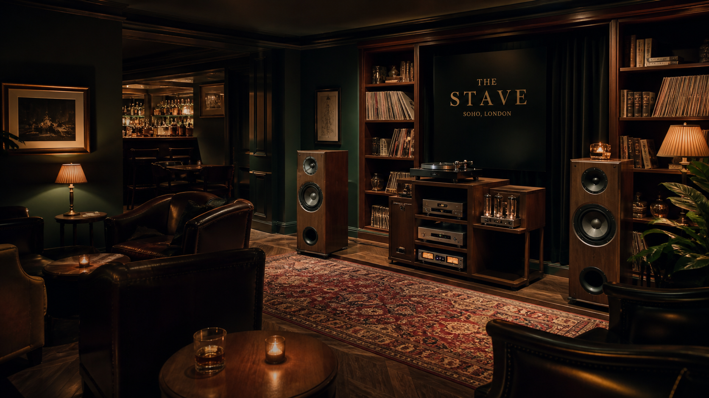
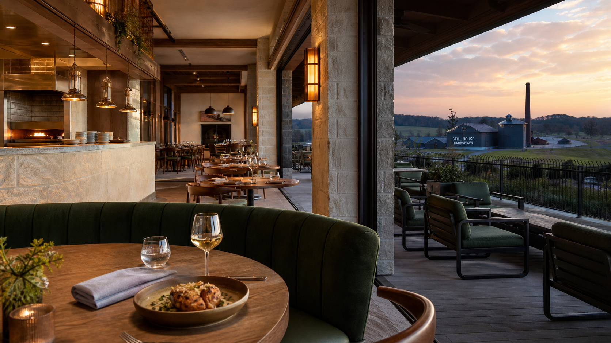

Hospitality without the costume.
Each brand has a distinct job. Every location keeps enough local judgment to feel rooted in its city.

Hatfield Bar & Grill
Serious bourbon, regionally aware American food and rooms that feel established without becoming themed.
Explore Hatfield Bar & Grill →
Hatfield Inns
Individually designed boutique hotels where bourbon is part of the welcome, not the wallpaper.
Explore Hatfield Inns →
The Stave
Eight private clubs built around concentrated listening rooms, serious bars, dining and member privacy.
Explore The Stave →
Still House
Destination restaurants rooted in Kentucky and Perthshire agriculture, with the distilleries present but never forced onto every plate.
Explore Still House →
Distilleries
Bardstown is the 1952 bourbon home. Perthshire is a local Scottish venture whose single malt will launch only when ready.
Explore Distilleries →
Hatfield Wines
Napa and Chianti Classico each keep their own agricultural logic, winemaking authority and hospitality rhythm.
Explore Hatfield Wines →